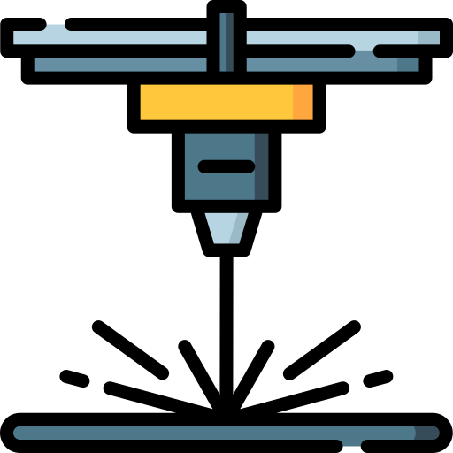
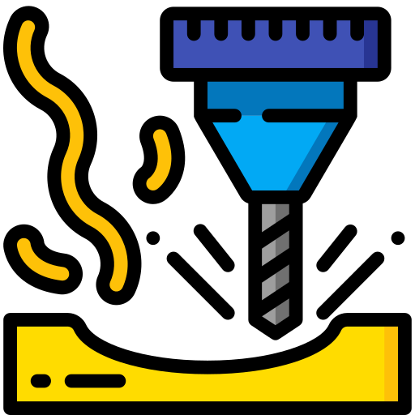

En Maquinados CNC Patracco, contamos con años de experiencia en la industria de maquinados CNC y corte láser. Nuestro equipo está conformado por profesionales altamente capacitados que utilizan tecnología de punta para cumplir con los más altos estándares de calidad. Ofrecemos una amplia gama de servicios de manufactura adaptados a las necesidades de cada cliente.

Maquinado CNC en Tornos
El maquinado en tornos CNC es ideal para la producción de piezas cilíndricas y simétricas con alta precisión. Este proceso permite trabajar materiales como acero, aluminio, bronce, plásticos, entre otros, y es especialmente útil para la creación de piezas personalizadas en grandes y pequeñas series.
Características del maquinado en tornos CNC:
- Alta precisión en diámetros y roscas.
- Optimización del tiempo de producción.
- Capacidad de fabricar piezas complejas con acabados finos.

Corte Láser
El corte láser es un proceso de manufactura de alta precisión que utiliza un haz de láser para cortar materiales como acero inoxidable, acero al carbón y aluminio. Es perfecto para piezas con geometrías detalladas y cortes limpios.
Ventajas del corte láser:
- Cortes extremadamente precisos.
- Reducción de desperdicio de material.
- Ideal para proyectos personalizados y prototipos.

Molduras especializadas
Los centros de maquinado CNC son máquinas multitarea que permiten realizar operaciones complejas como fresado, perforado, mandrinado y roscado en una sola configuración. Este proceso es ideal para piezas que requieren múltiples operaciones con tolerancias muy ajustadas.
Beneficios del maquinado en centros de mecanizado CNC:
- Reducción de tiempos de entrega.
- Capacidad para trabajar con una variedad de materiales.
- Mayor eficiencia y precisión en piezas de geometría compleja.